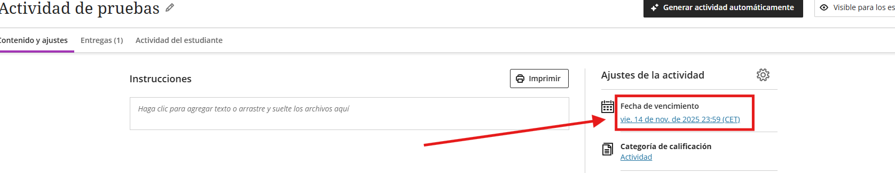
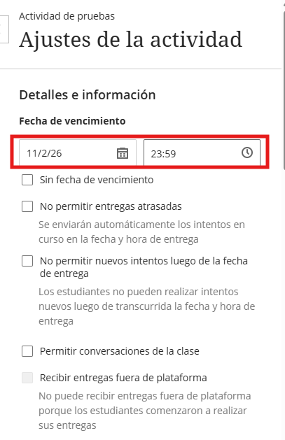
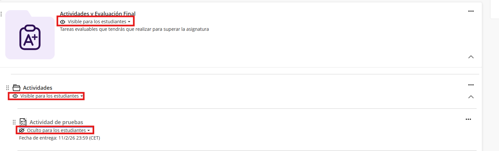
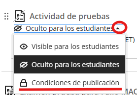

Condiciones de Publicación y Acceso
Configure correctamente los plazos para que los alumnos visualicen el contenido solo en los periodos establecidos.
1. Fecha de Vencimiento
Se utiliza para establecer el límite de entrega en actividades. Aparece automáticamente en el calendario del alumno.
⚠️ Exámenes: No activar fecha de vencimiento. Marcar siempre como "Sin fecha de vencimiento".

Para actividades, defina día y hora límite:

2. Condiciones de Publicación
Aplicable a carpetas, documentos y tareas. Controla cuándo el elemento es visible o invisible para los estudiantes.
Nota sobre carpetas: Si una carpeta es "No visible", todo su contenido interno quedará oculto automáticamente.

Ajuste de Rango de Fechas
Acceda a las opciones del elemento y seleccione Condiciones de publicación para establecer el periodo de visibilidad.

Regla de oro: La fecha de último acceso debe ser siempre posterior a la fecha de vencimiento para permitir la entrega.

Ejemplo práctico: Si la entrega vence el 11/02 a las 23:59, el acceso debe cerrarse el 12/02 a las 00:00.
Hecho por Jose F. © 2026